Last updated: 2022-07-20
Checks: 6 1
Knit directory: 20211209_JingxinRNAseq/analysis/
This reproducible R Markdown analysis was created with workflowr (version 1.6.2). The Checks tab describes the reproducibility checks that were applied when the results were created. The Past versions tab lists the development history.
The R Markdown is untracked by Git. To know which version of the R Markdown file created these results, you’ll want to first commit it to the Git repo. If you’re still working on the analysis, you can ignore this warning. When you’re finished, you can run wflow_publish to commit the R Markdown file and build the HTML.
Great job! The global environment was empty. Objects defined in the global environment can affect the analysis in your R Markdown file in unknown ways. For reproduciblity it’s best to always run the code in an empty environment.
The command set.seed(19900924) was run prior to running the code in the R Markdown file. Setting a seed ensures that any results that rely on randomness, e.g. subsampling or permutations, are reproducible.
Great job! Recording the operating system, R version, and package versions is critical for reproducibility.
Nice! There were no cached chunks for this analysis, so you can be confident that you successfully produced the results during this run.
Great job! Using relative paths to the files within your workflowr project makes it easier to run your code on other machines.
Great! You are using Git for version control. Tracking code development and connecting the code version to the results is critical for reproducibility.
The results in this page were generated with repository version e6f410c. See the Past versions tab to see a history of the changes made to the R Markdown and HTML files.
Note that you need to be careful to ensure that all relevant files for the analysis have been committed to Git prior to generating the results (you can use wflow_publish or wflow_git_commit). workflowr only checks the R Markdown file, but you know if there are other scripts or data files that it depends on. Below is the status of the Git repository when the results were generated:
Ignored files:
Ignored: .DS_Store
Ignored: .Rhistory
Ignored: .Rproj.user/
Ignored: ._.DS_Store
Ignored: analysis/20220707_TitrationSeries_DE_testing.nb.html
Ignored: code/.DS_Store
Ignored: code/._.DS_Store
Ignored: code/._DOCK7.pdf
Ignored: code/._DOCK7_DMSO1.pdf
Ignored: code/._DOCK7_SM2_1.pdf
Ignored: code/._FKTN_DMSO_1.pdf
Ignored: code/._FKTN_SM2_1.pdf
Ignored: code/._MAPT.pdf
Ignored: code/._PKD1_DMSO_1.pdf
Ignored: code/._PKD1_SM2_1.pdf
Ignored: code/.snakemake/
Ignored: code/5ssSeqs.tab
Ignored: code/Alignments/
Ignored: code/ChemCLIP/
Ignored: code/ClinVar/
Ignored: code/DE_testing/
Ignored: code/DE_tests.mat.counts.gz
Ignored: code/DE_tests.txt.gz
Ignored: code/Fastq/
Ignored: code/FastqFastp/
Ignored: code/Meme/
Ignored: code/OMIM/
Ignored: code/Session.vim
Ignored: code/SplicingAnalysis/
Ignored: code/featureCounts/
Ignored: code/log
Ignored: code/logs/
Ignored: code/scratch/
Ignored: data/._Hijikata_TableS1_41598_2017_8902_MOESM2_ESM.xls
Ignored: data/._Hijikata_TableS2_41598_2017_8902_MOESM3_ESM.xls
Ignored: output/._PioritizedIntronTargets.pdf
Untracked files:
Untracked: analysis/20220707_TitrationSeries_DE_testing.Rmd
Untracked: analysis/20220712_FitDoseResponseModels.Rmd
Unstaged changes:
Modified: analysis/20220629_FirstGlanceTitrationSeries.Rmd
Modified: analysis/index.Rmd
Staged changes:
Modified: analysis/20211216_DifferentialSplicing.Rmd
New: analysis/20220629_FirstGlanceTitrationSeries.Rmd
Modified: analysis/index.Rmd
Modified: code/Snakefile
New: code/config/samples.titrationseries.tsv
New: code/rules/ProcessTitrationSeries.smk
New: code/rules/RNASeqProcessing.smk
Modified: code/rules/common.smk
New: code/rules/pangolin.smk
Note that any generated files, e.g. HTML, png, CSS, etc., are not included in this status report because it is ok for generated content to have uncommitted changes.
There are no past versions. Publish this analysis with wflow_publish() to start tracking its development.
Here I will fit dose response curves using drc.
First load in libraries
library(tidyverse)
library(edgeR)
library(RColorBrewer)
library(gplots)
library(viridis)
library(broom)
library(qvalue)
library(drc)
library(sandwich)
library(lmtest)…and read in data, and subset genes with mean expression \(log_2(CountPerMillion)>1\).
dat <- read_tsv("../code/featureCounts/Counts.titration_series.txt", comment="#") %>%
rename_at(vars(-(1:6)), ~str_replace(.x, "Alignments/STAR_Align/TitrationExp(.+?)/Aligned.sortedByCoord.out.bam", "\\1")) %>%
dplyr::select(Geneid, everything(), -c(2:6)) %>%
column_to_rownames("Geneid") %>%
DGEList()
ColorsTreatments <- c("blue"="Bran", "red"="C2C5", "green"="Ris")
mean.cpm <- dat %>%
cpm(log=T) %>%
apply(1, mean)
ExpressedGenes.CPM <- dat[mean.cpm>1,] %>%
calcNormFactors() %>%
cpm(prior.count=0.1)
# Read in gene names. Note that ensembl_id to hgnc_symbol is not a 1-to-1 mapping
geneNames <- read_tsv("../data/Genes.list.txt") %>%
mutate(hgnc_symbol = coalesce(hgnc_symbol,ensembl_gene_id)) %>%
inner_join(data.frame(ensembl.full=rownames(ExpressedGenes.CPM)) %>%
mutate(ensembl_gene_id = str_remove(ensembl.full, "\\..+$")),
by = "ensembl_gene_id"
) %>%
dplyr::select(ensembl.full, hgnc_symbol)Now I will tidy the data a little bit, adding dose information to each sample. For purposes of model fitting, I will add all three DMSO replicates to each titration series as \(dose=0\), which can be handled by the standard 4 parameter log-logistic model implemented in drc.
dat.long <- ExpressedGenes.CPM %>%
as.data.frame() %>%
rownames_to_column("gene") %>%
gather("sample", "cpm", -gene) %>%
separate(sample, into=c("Treatment", "TitrationPoint"), remove = F, convert = T)
dat.DMSO <- dat.long %>%
filter(Treatment == "DMSO") %>%
mutate(dose.nM = 0) %>%
bind_rows(., ., ., .id="Treatment") %>%
mutate(Treatment = case_when(
Treatment == 1 ~ "Bran",
Treatment == 2 ~ "Ris",
Treatment == 3 ~ "C2C5"
))
Doses <- data.frame(C2C5=c(1000, 316, 100, 31.6, 10, 3.16, 1, 0.316),
Bran=c(3160, 1000, 316, 100, 31.6, 10, 3.16, 1),
Ris=c(10000, 3160, 1000, 316, 100, 31.6, 10, 3.16)) %>%
mutate(TitrationPoint = 1:8) %>%
gather(key="Treatment", value="dose.nM", -TitrationPoint)
dat.tidy <- dat.long %>%
filter(!Treatment == "DMSO") %>%
inner_join(Doses, by=c("Treatment", "TitrationPoint")) %>%
bind_rows(dat.DMSO) %>%
inner_join(geneNames, by=c("gene"="ensembl.full"))
head(dat.tidy) gene sample Treatment TitrationPoint cpm dose.nM
1 ENSG00000227232.5 Bran-1 Bran 1 6.725514 3160
2 ENSG00000279457.4 Bran-1 Bran 1 11.998077 3160
3 ENSG00000225972.1 Bran-1 Bran 1 9.661373 3160
4 ENSG00000225630.1 Bran-1 Bran 1 363.612135 3160
5 ENSG00000237973.1 Bran-1 Bran 1 449.156477 3160
6 ENSG00000229344.1 Bran-1 Bran 1 4.972986 3160
hgnc_symbol
1 WASH7P
2 WASH9P
3 MTND1P23
4 MTND2P28
5 MTCO1P12
6 MTCO2P12Now that the data is “tidy”, with one row for each treatment:dose:gene combination, I should be able to easily fit models for each treatment:gene group.
Let’s pick one treatment:gene combination for an illustrative example, and fit the 4 parameter log-logistic model, constraining the upper and lower limit parameters to be position (since CPM cannot be negative).
fitted_curve <- dat.tidy %>%
filter(hgnc_symbol=="STAT1" & Treatment == "Ris") %>%
drm(formula = cpm ~ dose.nM,
data = .,
fct = LL.4(names=c("Steepness", "LowerLimit", "UpperLimit", "ED50")),
lowerl = c(NA, 0, 0, NA))
plot(fitted_curve, type="all")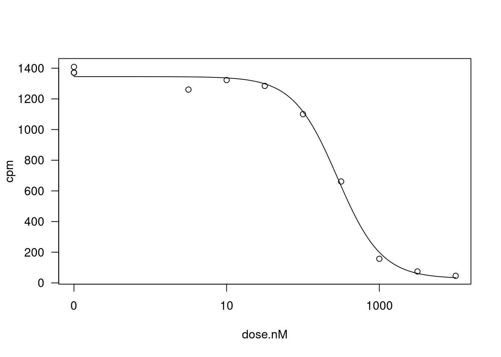
summary(fitted_curve)
Model fitted: Log-logistic (ED50 as parameter) (4 parms)
Parameter estimates:
Estimate Std. Error t-value p-value
Steepness:(Intercept) 1.50491 0.20358 7.3923 0.0001504 ***
LowerLimit:(Intercept) 28.16274 38.01078 0.7409 0.4828536
UpperLimit:(Intercept) 1345.21964 21.23941 63.3360 6.425e-11 ***
ED50:(Intercept) 282.55139 27.47342 10.2845 1.778e-05 ***
---
Signif. codes: 0 '***' 0.001 '**' 0.01 '*' 0.05 '.' 0.1 ' ' 1
Residual standard error:
47.58045 (7 degrees of freedom)glance(fitted_curve)# A tibble: 1 × 4
AIC BIC logLik df.residual
<dbl> <dbl> <logLik> <int>
1 121. 123. -55.60905 7According to the drc author’s Plos-one paper supplement, more robust estimates of coefficeint standard errors can be obtained like this:
coeftest(fitted_curve, vcov = sandwich)
t test of coefficients:
Estimate Std. Error t value Pr(>|t|)
Steepness:(Intercept) 1.50491 0.13151 11.4431 8.741e-06 ***
LowerLimit:(Intercept) 28.16274 11.61893 2.4239 0.04583 *
UpperLimit:(Intercept) 1345.21964 22.07443 60.9402 8.412e-11 ***
ED50:(Intercept) 282.55139 16.32676 17.3060 5.287e-07 ***
---
Signif. codes: 0 '***' 0.001 '**' 0.01 '*' 0.05 '.' 0.1 ' ' 1It’s not clear to me whether the response I should be fitting should be \(CPM\) or \(log(CPM)\) for gene expression level. Let’s repeat the process now modelling \(log(CPM)\)
fitted_curve <- dat.tidy %>%
filter(hgnc_symbol=="STAT1" & Treatment == "Ris") %>%
drm(formula = log(cpm) ~ dose.nM,
data = .,
fct = LL.4(names=c("Steepness", "LowerLimit", "UpperLimit", "ED50")),
lowerl = c())
plot(fitted_curve, type="all")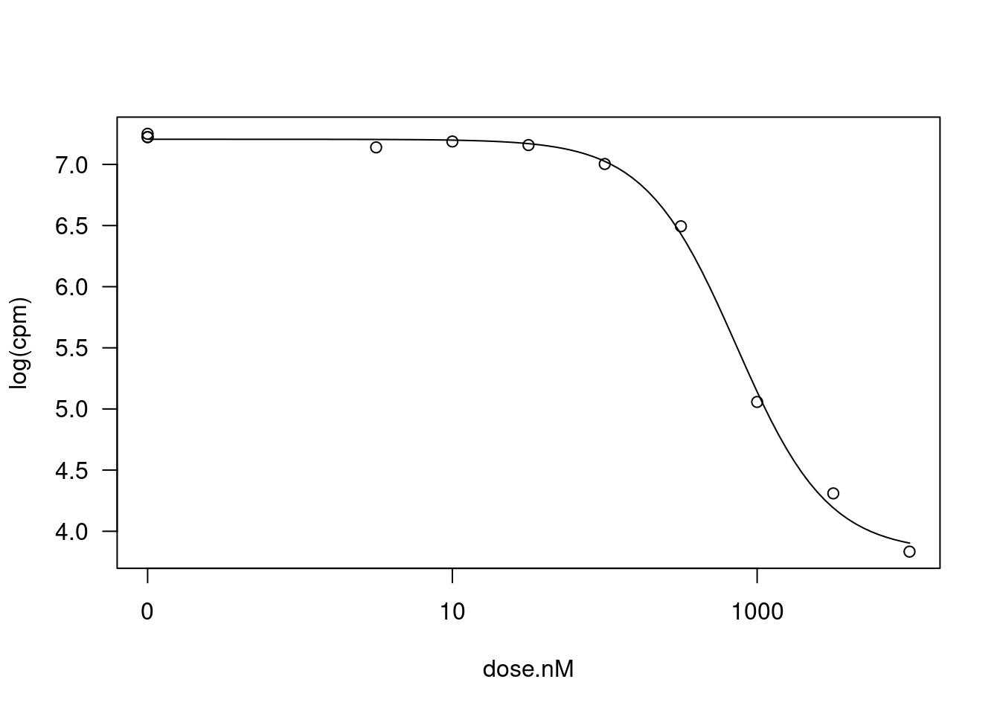
summary(fitted_curve)
Model fitted: Log-logistic (ED50 as parameter) (4 parms)
Parameter estimates:
Estimate Std. Error t-value p-value
Steepness:(Intercept) 1.446211 0.133727 10.815 1.274e-05 ***
LowerLimit:(Intercept) 3.828167 0.090682 42.215 1.092e-09 ***
UpperLimit:(Intercept) 7.205443 0.030250 238.196 6.143e-15 ***
ED50:(Intercept) 730.890420 53.252969 13.725 2.570e-06 ***
---
Signif. codes: 0 '***' 0.001 '**' 0.01 '*' 0.05 '.' 0.1 ' ' 1
Residual standard error:
0.0730794 (7 degrees of freedom)coeftest(fitted_curve, vcov = sandwich)
t test of coefficients:
Estimate Std. Error t value Pr(>|t|)
Steepness:(Intercept) 1.446211 0.141243 10.239 1.830e-05 ***
LowerLimit:(Intercept) 3.828167 0.094068 40.696 1.410e-09 ***
UpperLimit:(Intercept) 7.205443 0.016000 450.344 < 2.2e-16 ***
ED50:(Intercept) 730.890420 58.873919 12.415 5.061e-06 ***
---
Signif. codes: 0 '***' 0.001 '**' 0.01 '*' 0.05 '.' 0.1 ' ' 1glance(fitted_curve)# A tibble: 1 × 4
AIC BIC logLik df.residual
<dbl> <dbl> <logLik> <int>
1 -21.3 -19.3 15.65589 7That also looks like a good fit. Just as a sanity check, let’s compare the AIC between this model, versus a linear model.
# glance at some stats about the log-logistic model fit
glance(fitted_curve)# A tibble: 1 × 4
AIC BIC logLik df.residual
<dbl> <dbl> <logLik> <int>
1 -21.3 -19.3 15.65589 7#fit an linear model
fitted_curve.lm <- dat.tidy %>%
filter(hgnc_symbol=="STAT1" & Treatment == "Ris") %>%
lm(formula = log(cpm) ~ dose.nM,
data = .)
# glance at some stats about the log-logistic model fit
glance(fitted_curve.lm)# A tibble: 1 × 12
r.squared adj.r.squared sigma statistic p.value df logLik AIC BIC
<dbl> <dbl> <dbl> <dbl> <dbl> <dbl> <dbl> <dbl> <dbl>
1 0.693 0.659 0.760 20.3 0.00147 1 -11.5 29.0 30.2
# … with 3 more variables: deviance <dbl>, df.residual <int>, nobs <int>The log-logistic model is obviously a reasonable fit, and the AIC also shows this log-linear model is a better fit than the simple linear model.
For now I will continue just modelling \(CPM\) (as opposed to \(log(CPM)\)) for simplicity, and at least attempt to fit a log-logistic model for each gene… I can think later about how to prune out the questionable model fits before subsequent analyses. One sort of reasonable way to prune out questionable models I think will be to simply to fit a linear model and only consider gene:treatment combinations where the log-linear fit model is obviously better than the simple linear model (\(\Delta AIC>2\)).
Now let’s try to fit to all gene:treatment combinations…
Actually, to save computation time, at first let’s just try fitting to 100 gene:treatment combinations, and peruse the results.
sample_n_of <- function(data, size, ...) {
dots <- quos(...)
group_ids <- data %>%
group_by(!!! dots) %>%
group_indices()
sampled_groups <- sample(unique(group_ids), size)
data %>%
filter(group_ids %in% sampled_groups)
}
GenesOfInterest <- c("MAPT", "SNCA", "SMN2", "HTT", "GALC", "FOXM1", "STAT1", "AKT3", "PDGFRB")
# had to use possibly wrapper function to handle errors, like when drm fitting does not converge
safe_drm <- possibly(drm, otherwise=NA)
set.seed(0)
dat.fitted <-
dat.tidy %>%
sample_n_of(100, Treatment, gene) %>%
group_by(Treatment, gene) %>%
# filter(hgnc_symbol=="STAT1") %>%
# filter(hgnc_symbol %in% GenesOfInterest) %>%
nest(-Treatment, -gene) %>%
mutate(model = map(data, ~safe_drm(formula = cpm ~ dose.nM,
data = .,
fct = LL.4(names=c("Steepness", "LowerLimit", "UpperLimit", "ED50"))))) %>%
# filter out the wrapper functions that returned list with NA
filter(!anyNA(model))Error in optim(startVec, opfct, hessian = TRUE, method = optMethod, control = list(maxit = maxIt, :
non-finite finite-difference value [4]dat.fitted.summarised <- dat.fitted %>%
mutate(results = map(model, tidy)) %>%
unnest(results) %>%
mutate(summary = map(model, glance)) %>%
unnest(summary)
dat.fitted %>%
mutate(resid = map(model, residuals)) %>%
unnest(data, resid) %>%
ggplot(aes(x=log(cpm), y=resid)) +
coord_cartesian(xlim=c(0,6), ylim=c(-20,20)) +
labs(title="Residuals as a function of CPM", caption="modelled CPM; not logCPM") +
geom_point() +
theme_bw()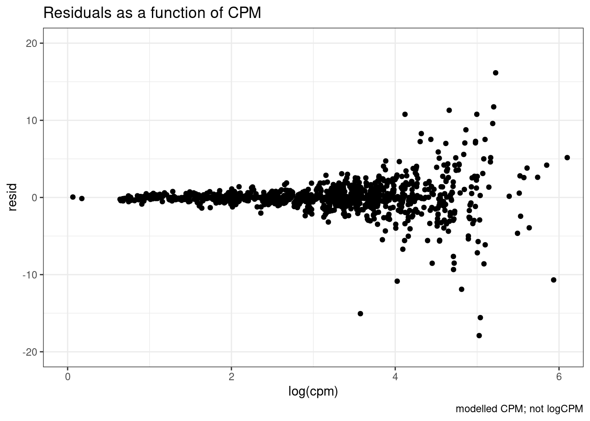
So there is sort of unsurprisingly some heterskedastic errors… More reason to try modelling log(CPM)…
Let’s also check the data for a gene where the model could not be fit: ENSG00000180773.15 with risdiplam.
dat.tidy %>%
filter(gene == "ENSG00000180773.15") %>%
ggplot(aes(x=dose.nM, y=cpm, color=Treatment)) +
geom_point() +
geom_smooth(method="loess") +
scale_x_continuous(trans="log1p", limits=c(0, 10000), breaks=c(10000, 3160, 1000, 316, 100, 31.6, 10, 3.16, 1, 0.316, 0)) +
theme_bw() +
theme(axis.text.x = element_text(angle = 45, vjust = 1, hjust=1))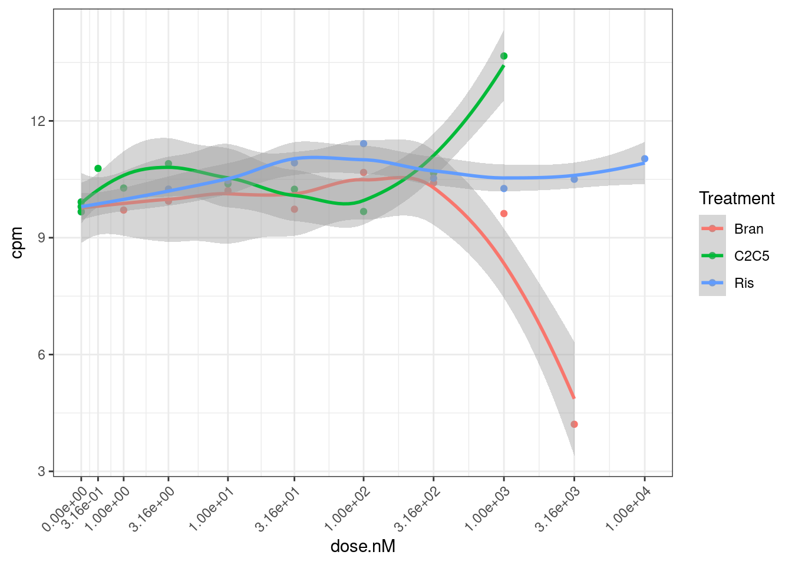
Ok, I can kind of understand how this the model fitting might be weird for this data.
Let’s try fitting model to logCPM now…
set.seed(0)
dat.fitted <-
dat.tidy %>%
sample_n_of(100, Treatment, gene) %>%
group_by(Treatment, gene) %>%
# filter(hgnc_symbol=="STAT1") %>%
# filter(hgnc_symbol %in% GenesOfInterest) %>%
nest(-Treatment, -gene) %>%
mutate(model = map(data, ~safe_drm(formula = log(cpm) ~ dose.nM,
data = .,
fct = LL.4(names=c("Steepness", "LowerLimit", "UpperLimit", "ED50"))))) %>%
# filter out the wrapper functions that returned list with NA
filter(!anyNA(model))Error in optim(startVec, opfct, hessian = TRUE, method = optMethod, control = list(maxit = maxIt, :
non-finite finite-difference value [4]dat.fitted.summarised <- dat.fitted %>%
mutate(results = map(model, tidy)) %>%
unnest(results) %>%
mutate(summary = map(model, glance)) %>%
unnest(summary)
dat.fitted %>%
mutate(resid = map(model, residuals)) %>%
unnest(data, resid) %>%
ggplot(aes(x=log(cpm), y=resid)) +
coord_cartesian(xlim=c(0,6), ylim=c(-1,1)) +
labs(title="Residuals as a function of CPM", caption="modelled CPM; not logCPM") +
geom_point() +
theme_bw()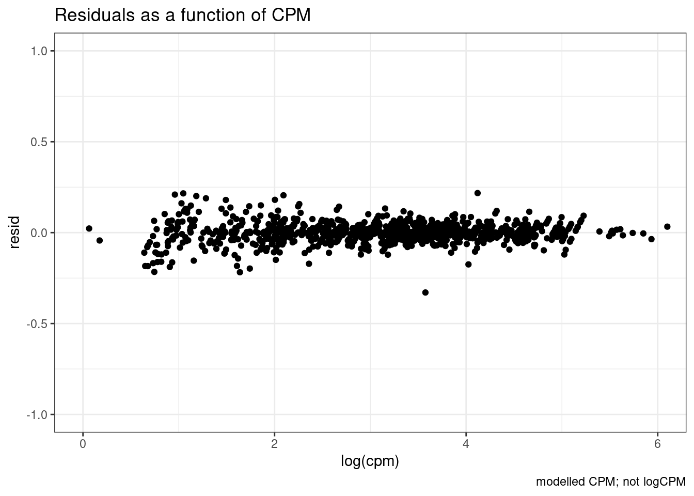
I think that is generally nicer… Let’s manually inspect dose response data points for genes of interest after log transforming the expression…
dat.tidy %>%
filter(hgnc_symbol %in% GenesOfInterest) %>%
ggplot(aes(x=dose.nM, y=log2(cpm), color=Treatment)) +
geom_point() +
geom_smooth(aes(group=Treatment), method = drm, method.args = list(fct = L.4(names=c("Steepness", "LowerLimit", "UpperLimit", "ED50"))), se = FALSE) +
scale_x_continuous(trans="log1p", limits=c(0, 10000), breaks=c(10000, 3160, 1000, 316, 100, 31.6, 10, 3.16, 1, 0.316, 0)) +
facet_wrap(~hgnc_symbol, scales="free_y") +
theme_bw() +
theme(axis.text.x = element_text(angle = 45, vjust = 1, hjust=1))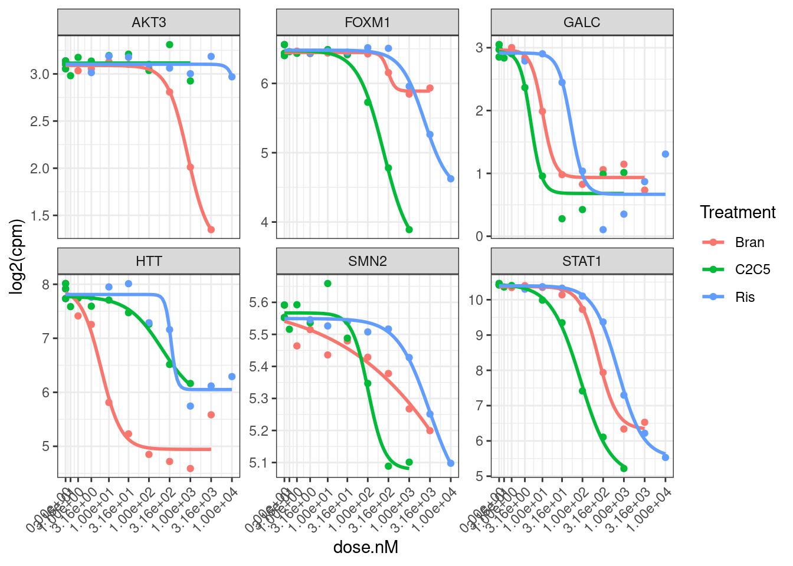
Hmm, based on these genes I’m still not sure if log transforming the CPM makes more sense, given that the field-standard model for dose-response curves is a sigmoidal shape log-logistic model. When viewed on this log-scale is notable that the effects keep going in terms of fold change, even at high doses… Contrast this to the same data plotted not on log-scale:
dat.tidy %>%
filter(hgnc_symbol %in% GenesOfInterest) %>%
ggplot(aes(x=dose.nM, y=cpm, color=Treatment)) +
geom_point() +
geom_smooth(aes(group=Treatment), method = drm, method.args = list(fct = L.4(names=c("Steepness", "LowerLimit", "UpperLimit", "ED50"))), se = FALSE) +
scale_x_continuous(trans="log1p", limits=c(0, 10000), breaks=c(10000, 3160, 1000, 316, 100, 31.6, 10, 3.16, 1, 0.316, 0)) +
facet_wrap(~hgnc_symbol, scales="free_y") +
theme_bw() +
theme(axis.text.x = element_text(angle = 45, vjust = 1, hjust=1))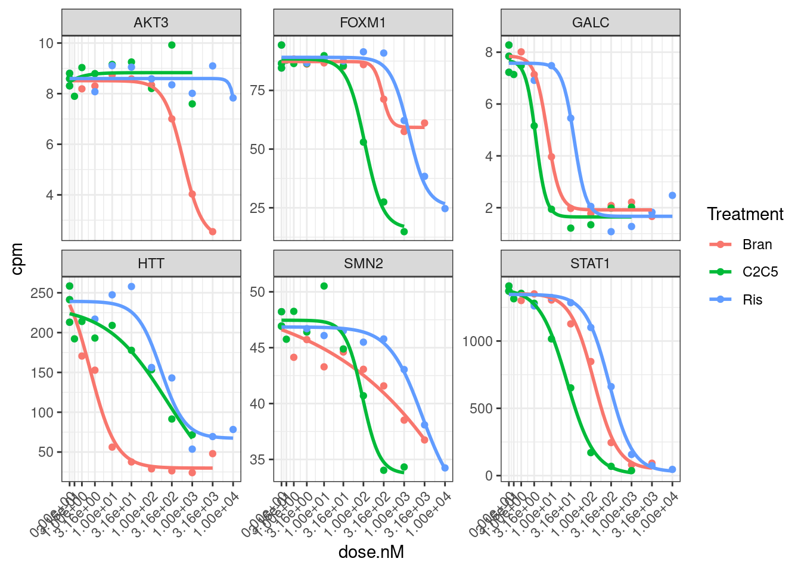
I think whether to log-transform the data almost depends on what we will do with the downstream analsis. Because the true effects on splicing still continue at low doses, so we might care most about as accurately modeling all these effects… In contrast, if we care about finding the genes therapeutic target genes, an effective knockdown might be better ascertained without log transform. Let’s fit a model to all gene:treatment combinations now and use log-transformed CPM as response variable.
Update: actually, this is a long computation for this notebook, let’s not evaluate this code block, and I’ll just use this notebook to prototype the model-fitting procedure before using a proper Rscript to fit models to all genes…
dat.fitted <-
dat.tidy %>%
group_by(Treatment, gene) %>%
nest(-Treatment, -gene) %>%
mutate(model = map(data, ~safe_drm(formula = log2(cpm) ~ dose.nM,
data = .,
fct = LL.4(names=c("Steepness", "LowerLimit", "UpperLimit", "ED50"))))) %>%
# filter out the wrapper functions that returned list with NA
filter(!anyNA(model))Let’s do some more careful comparisons between fit with log CPM versus CPM:
set.seed(0)
dat.fitted <-
dat.tidy %>%
sample_n_of(100, Treatment, gene) %>%
group_by(Treatment, gene) %>%
# filter(hgnc_symbol=="STAT1") %>%
# filter(hgnc_symbol %in% GenesOfInterest) %>%
nest(-Treatment, -gene) %>%
mutate(model.cpm.LL4 = map(data, ~safe_drm(formula = cpm ~ dose.nM,
data = .,
fct = LL.4(names=c("Steepness", "LowerLimit", "UpperLimit", "ED50"))))) %>%
mutate(model.log2cpm.LL4 = map(data, ~safe_drm(formula = log2(cpm) ~ dose.nM,
data = .,
fct = LL.4(names=c("Steepness", "LowerLimit", "UpperLimit", "ED50"))))) %>%
# filter out the wrapper functions that returned list with NA
filter((!anyNA(model.cpm.LL4)) & (!anyNA(model.log2cpm.LL4))) %>%
ungroup()Error in optim(startVec, opfct, hessian = TRUE, method = optMethod, control = list(maxit = maxIt, :
non-finite finite-difference value [4]
Error in optim(startVec, opfct, hessian = TRUE, method = optMethod, control = list(maxit = maxIt, :
non-finite finite-difference value [4]dat.fitted.summarised <- dat.fitted %>%
gather(key="ModelName", value="model", model.cpm.LL4, model.log2cpm.LL4) %>%
mutate(results = map(model, tidy)) %>%
unnest(results) %>%
mutate(summary = map(model, glance)) %>%
unnest(summary)
dat.fitted.summarised %>%
# select(gene, Treatment, ModelName, estimate, term)
# spread(key="ModelName", value="estimate")
mutate(estimate = case_when(
(term %in% c("LowerLimit", "UpperLimit")) & (ModelName == "model.log2cpm.LL4") ~ 2**estimate,
TRUE ~ estimate
)) %>%
pivot_wider(names_from = "ModelName", values_from="estimate", id_cols=c("gene", "Treatment", "term")) %>%
ggplot(aes(x=model.cpm.LL4, y=model.log2cpm.LL4)) +
geom_point() +
scale_x_continuous(trans="log10") +
scale_y_continuous(trans="log10") +
facet_wrap(~term, scales="free") +
theme_bw() +
labs(title="Correlation of parameter point estimates with two models", caption="4 paramaeter log-logistic, modelling either logCPM or CPM\nLowerLimit and UpperLimit parameters converted to linear scale before plotting in log2CPM model")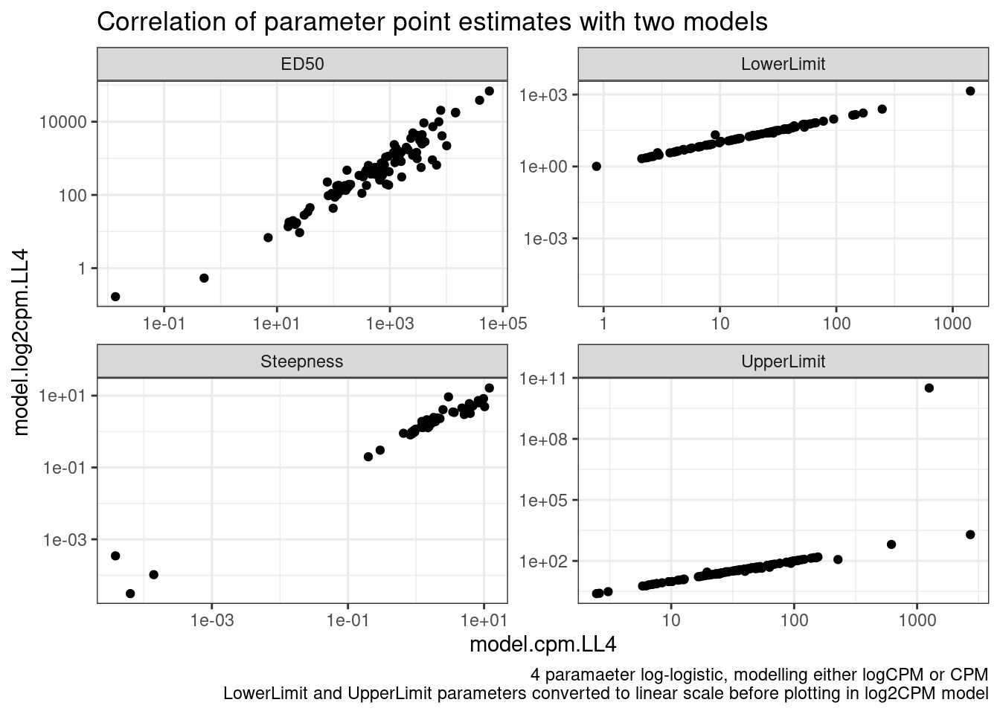
Ok, so the actual parameter estimates are more or less identical whether I model CPM or logCPM. In theory, heterskedastic erros should bias the paramater estiamtes, but only their standard errors.
Let’s compare AIC between the fit models versus simple linear regression.
mselect(fitted_curve, linreg=T)["Lin", "IC"][1] 28.95856modelFit(fitted_curve)Lack-of-fit test
ModelDf RSS Df F value p value
ANOVA 2 0.000487
DRC model 7 0.037384 5 30.2815 0.0323plot(fitted_curve)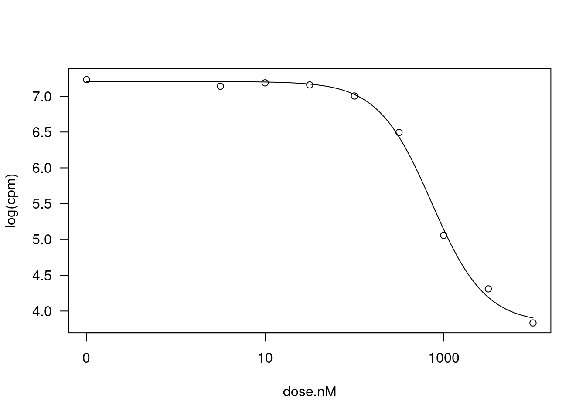
dat.fitted %>%
gather(key="ModelName", value="model", model.cpm.LL4, model.log2cpm.LL4) %>%
mutate(mselect.results = map(model, mselect, linreg=T)) %>%
mutate(ModelFit = map(model, modelFit)) %>%
rowwise() %>%
mutate(DeltaAIC = mselect.results["LL.4", "IC"] - mselect.results["Lin", "IC"]) %>%
rowwise() %>%
mutate(Pval = ModelFit['DRC model', 'p value']) %>%
ungroup() %>%
ggplot(aes(x=DeltaAIC, fill=ModelName)) +
geom_histogram() +
theme_bw() +
labs(x="Delta AIC with linear model", caption="More negative means better fit with LL.4 model")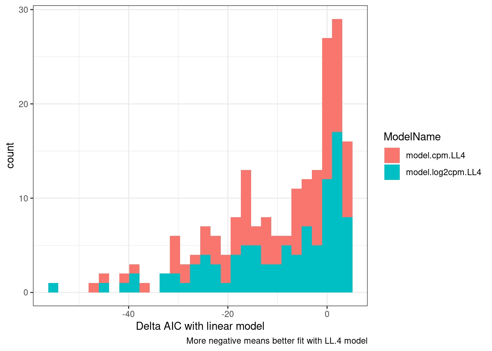
Let’s plot the original dose response points and the models and those model fit summary stats:
set.seed(1)
dat.fitted %>%
gather(key="ModelName", value="model", model.cpm.LL4, model.log2cpm.LL4) %>%
filter(ModelName == "model.log2cpm.LL4") %>%
mutate(mselect.results = map(model, mselect, linreg=T)) %>%
mutate(ModelFit = map(model, modelFit)) %>%
rowwise() %>%
mutate(DeltaAIC = mselect.results["LL.4", "IC"] - mselect.results["Lin", "IC"]) %>%
rowwise() %>%
mutate(Pval = ModelFit['DRC model', 'p value']) %>%
ungroup() %>%
sample_n(20) %>%
unnest(data) %>%
ggplot(aes(x=dose.nM, y=cpm, color=Treatment)) +
geom_label(data = (
. %>%
distinct(Treatment, gene, .keep_all = T) %>%
group_by(gene) %>%
mutate(vjust = 1 * row_number()) %>%
ungroup()),
aes(label = paste0("DeltaAIC: ",signif(DeltaAIC,2), "\nP:", format.pval(Pval, digits = 2)), vjust=vjust),
x=-Inf, y=Inf, size=3, hjust=-0.1
) +
geom_point() +
geom_smooth(aes(group=Treatment), method = drm, method.args = list(fct = L.4(names=c("Steepness", "LowerLimit", "UpperLimit", "ED50"))), se = FALSE) +
scale_x_continuous(trans="log1p", limits=c(0, 10000), breaks=c(10000, 3160, 1000, 316, 100, 31.6, 10, 3.16, 1, 0.316, 0)) +
facet_wrap(~hgnc_symbol, scales="free") +
theme_bw() +
theme(axis.text.x = element_text(angle = 45, vjust = 1, hjust=1))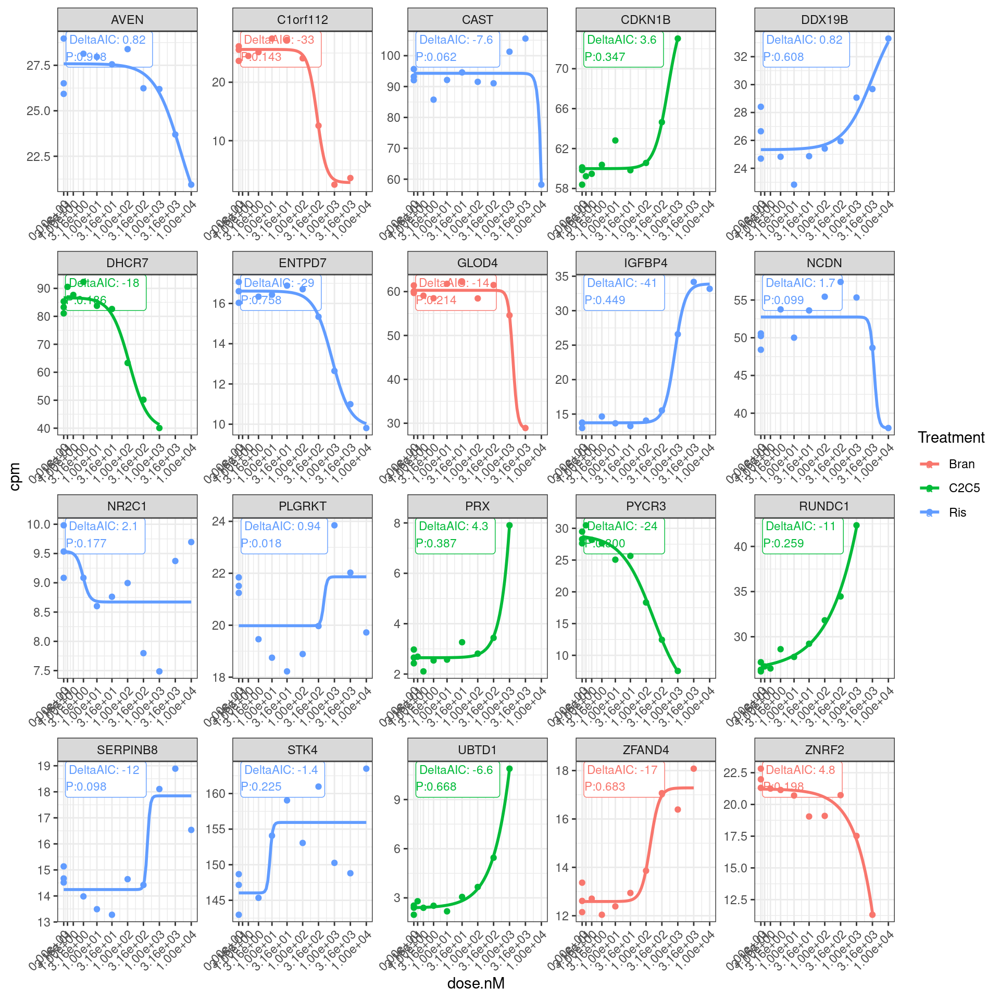
So a lot of things have a negative AIC (roughly meaning the four parameter log logistic model is better fit than simple linear model). The P value is also a test of if a simple anova model is better fit than the drc model, wherin small P-values indicate anova model is better. This practice of looking at actual curves and then inspecting the summary stats about how quality of the model is good.
Let me get some sense of the distribution of P values for this test
dat.fitted %>%
gather(key="ModelName", value="model", model.cpm.LL4, model.log2cpm.LL4) %>%
mutate(mselect.results = map(model, mselect, linreg=T)) %>%
mutate(ModelFit = map(model, modelFit)) %>%
rowwise() %>%
mutate(DeltaAIC = mselect.results["LL.4", "IC"] - mselect.results["Lin", "IC"]) %>%
rowwise() %>%
mutate(Pval = ModelFit['DRC model', 'p value']) %>%
ungroup() %>%
ggplot(aes(x=Pval)) +
geom_histogram(bins=20) +
facet_wrap(~ModelName)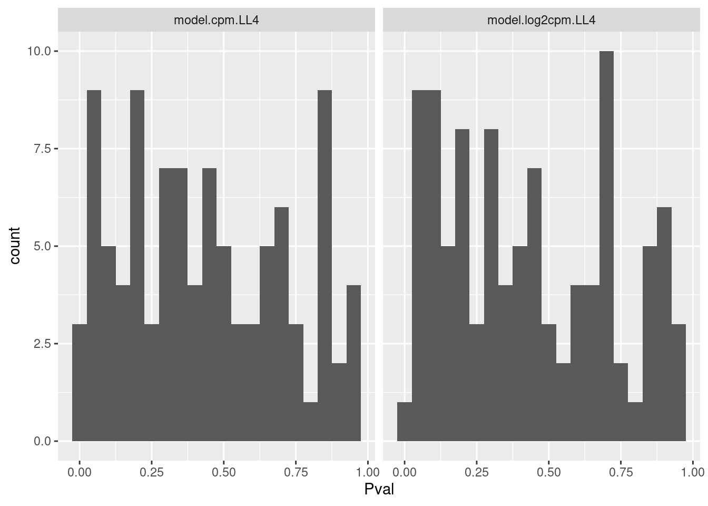
Ok that test might be reasonably calibrated. Maybe that is the simplest way I should evaluate goodness of fit.
Let’s also look at distribution of DeltaAIC
dat.fitted %>%
gather(key="ModelName", value="model", model.cpm.LL4, model.log2cpm.LL4) %>%
mutate(mselect.results = map(model, mselect, linreg=T)) %>%
mutate(ModelFit = map(model, modelFit)) %>%
rowwise() %>%
mutate(DeltaAIC = mselect.results["LL.4", "IC"] - mselect.results["Lin", "IC"]) %>%
rowwise() %>%
mutate(Pval = ModelFit['DRC model', 'p value']) %>%
ungroup() %>%
ggplot(aes(x=DeltaAIC)) +
geom_histogram(bins=20) +
facet_wrap(~ModelName)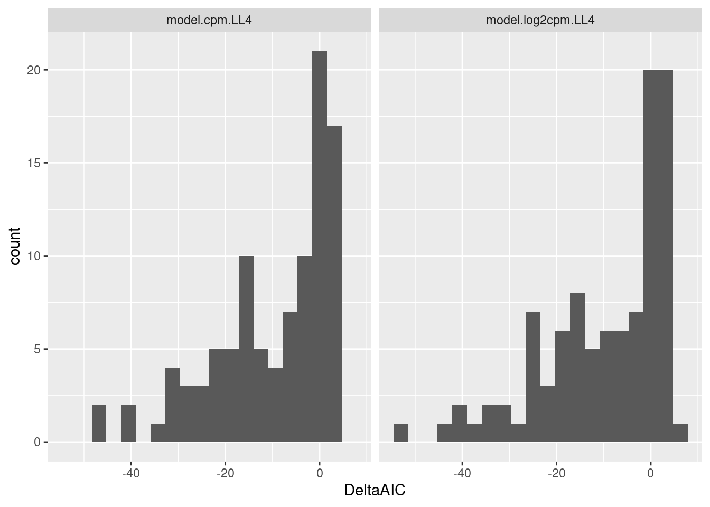
Let’s look at the raw data and fits for different ranges of DeltaAIC. From the previous plots a very negative deltaAIC might be a reasonable way to filter for reasonable fits.
Now I also want to inspect the standard errors of the parameter estimates. As before, I can either model logCPM as the response, or plain CPM and then use coeftest(fitted_curve, vcov = sandwich) to get more robust standard error estimates, instead of the biased standard errors (biased because of heterskedascity) output of drc.
coeftest(fitted_curve, vcov = sandwich)
t test of coefficients:
Estimate Std. Error t value Pr(>|t|)
Steepness:(Intercept) 1.446211 0.141243 10.239 1.830e-05 ***
LowerLimit:(Intercept) 3.828167 0.094068 40.696 1.410e-09 ***
UpperLimit:(Intercept) 7.205443 0.016000 450.344 < 2.2e-16 ***
ED50:(Intercept) 730.890420 58.873919 12.415 5.061e-06 ***
---
Signif. codes: 0 '***' 0.001 '**' 0.01 '*' 0.05 '.' 0.1 ' ' 1dat.fitted %>%
# head() %>%
gather(key="ModelName", value="model", model.cpm.LL4, model.log2cpm.LL4) %>%
mutate(results = map(model, tidy)) %>%
mutate(results.robust = map(model, coeftest, vcov = sandwich)) %>%
rowwise() %>%
mutate(robust_estimate.Steepness = results.robust[1,1]) %>%
mutate(robust_estimate.LowerLimit = results.robust[2,1]) %>%
mutate(robust_estimate.UpperLimit = results.robust[3,1]) %>%
mutate(robust_estimate.ED50 = results.robust[4,1]) %>%
mutate(robust_se.Steepness = results.robust[1,2]) %>%
mutate(robust_se.LowerLimit = results.robust[2,2]) %>%
mutate(robust_se.UpperLimit = results.robust[3,2]) %>%
mutate(robust_se.ED50 = results.robust[4,2]) %>%
unnest(results) %>%
pivot_longer(starts_with("robust_estimate"), names_to = "term2", names_prefix="robust_estimate.", values_to="robust.estimate") %>%
filter(term==term2) %>%
ggplot(aes(x=estimate, y=robust.estimate)) +
geom_point() +
scale_x_continuous(trans="log10") +
scale_y_continuous(trans="log10") +
facet_grid(rows=vars(ModelName), cols=vars(term)) +
theme_bw() +
labs(title="Correlation of parameter point estimates with two models and two estimate functions")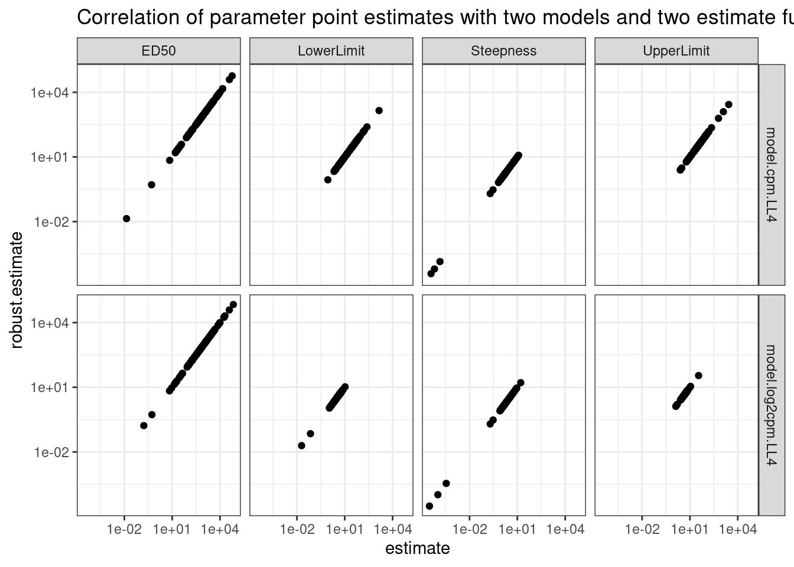
Ok, so clearly whether you use the standard drc output or the coeftest(fitted_curve, vcov = sandwich) (labelled as “robust estimate” above) you get the same number. Now check the same thing for standard error.
dat.fitted %>%
# head() %>%
gather(key="ModelName", value="model", model.cpm.LL4, model.log2cpm.LL4) %>%
mutate(results = map(model, tidy)) %>%
mutate(results.robust = map(model, coeftest, vcov = sandwich)) %>%
rowwise() %>%
mutate(robust_estimate.Steepness = results.robust[1,1]) %>%
mutate(robust_estimate.LowerLimit = results.robust[2,1]) %>%
mutate(robust_estimate.UpperLimit = results.robust[3,1]) %>%
mutate(robust_estimate.ED50 = results.robust[4,1]) %>%
mutate(robust_se.Steepness = results.robust[1,2]) %>%
mutate(robust_se.LowerLimit = results.robust[2,2]) %>%
mutate(robust_se.UpperLimit = results.robust[3,2]) %>%
mutate(robust_se.ED50 = results.robust[4,2]) %>%
unnest(results) %>%
pivot_longer(starts_with("robust_se"), names_to = "term2", names_prefix="robust_se.", values_to="robust.se") %>%
filter(term==term2) %>%
ggplot(aes(x=std.error, y=robust.se)) +
geom_abline(color="red") +
geom_point() +
scale_x_continuous(trans="log10") +
scale_y_continuous(trans="log10") +
facet_grid(rows=vars(ModelName), cols=vars(term)) +
theme_bw() +
labs(title="Correlation of parameter point estimates with two models and two estimate functions")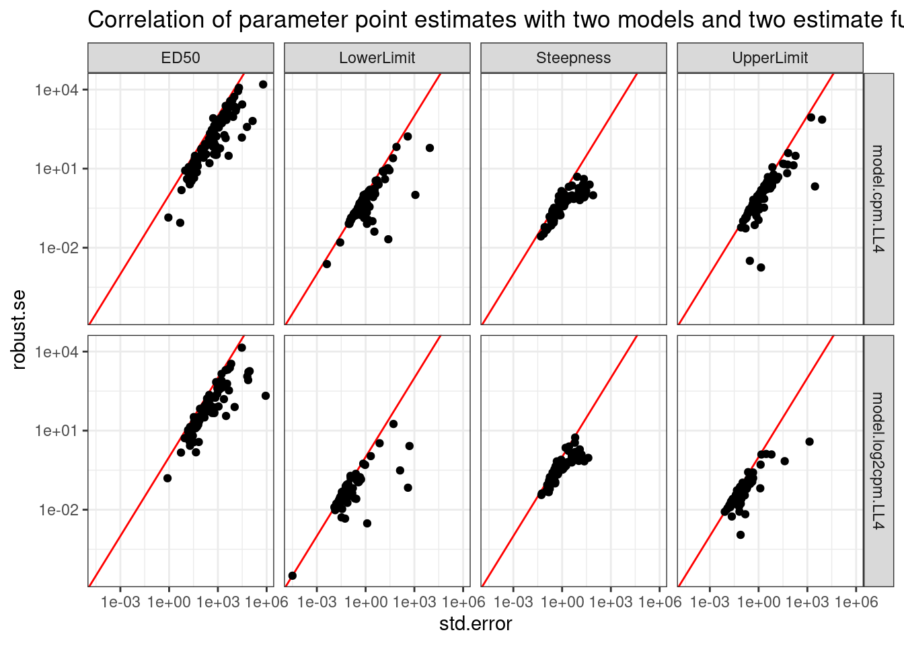
So the drc standard error can sometimes be upwardly biased, at least compared to the so called robust method. And this is true whether for both the logCPM and CPM models. I think I will just rely on the std error estimates directly from drc for simplicity, but I will use use the logCPM model.
Also one thing I can do is fit models for all the small molecule titration series at once, and tell drc that all three fits should have the same lower value (DMSO control). That seems the most proper way to use the DMSO samples.
dat.fitted.FixSameLowerLimit <- dat.tidy %>%
# sample_n_of(100, Treatment, gene) %>%
# group_by(Treatment, gene) %>%
# filter(hgnc_symbol=="STAT1") %>%
filter(hgnc_symbol %in% GenesOfInterest) %>%
nest(data=-gene) %>%
mutate(model = map(data, ~safe_drm(formula = cpm ~ dose.nM,
curveid = Treatment,
data = .,
fct = LL.4(names=c("Steepness", "LowerLimit", "UpperLimit", "ED50")),
pmodels=data.frame(Treatment, 1, Treatment, Treatment)
))) %>%
# filter out the wrapper functions that returned list with NA
filter(!anyNA(model))
dat.tidy.test <- dat.tidy %>%
filter(hgnc_symbol=="RRM2B")
# filter(hgnc_symbol=="STAT1")
fit <- drm(formula = cpm ~ dose.nM,
curveid = Treatment,
data = dat.tidy.test,
fct = LL.4(names=c("Steepness", "LowerLimit", "UpperLimit", "ED50")),
pmodels=data.frame(Treatment, 1, Treatment, Treatment))
plot(fit)
dat.tidy.test <- dat.tidy %>%
filter(gene == "ENSG00000174574.16" & Treatment == "Bran")
fit <- drm(formula = cpm ~ dose.nM,
curveid = Treatment,
data = dat.tidy.test,
fct = LL.4(names=c("Steepness", "LowerLimit", "UpperLimit", "ED50")),
pmodels=data.frame(Treatment, Treatment, Treatment, Treatment))
plot(fit)
summary(fit)Update:
For now let’s fit things as I have been doing, and start comparing parameter estimates between treatments.
set.seed(0)
dat.fitted <-
dat.tidy %>%
sample_n_of(100, gene) %>%
group_by(Treatment, gene) %>%
# filter(hgnc_symbol=="STAT1") %>%
# filter(hgnc_symbol %in% GenesOfInterest) %>%
nest(-Treatment, -gene) %>%
mutate(model.cpm.LL4 = map(data, ~safe_drm(formula = cpm ~ dose.nM,
data = .,
fct = LL.4(names=c("Steepness", "LowerLimit", "UpperLimit", "ED50"))))) %>%
mutate(model.log2cpm.LL4 = map(data, ~safe_drm(formula = log2(cpm) ~ dose.nM,
data = .,
fct = LL.4(names=c("Steepness", "LowerLimit", "UpperLimit", "ED50"))))) %>%
# filter out the wrapper functions that returned list with NA
filter((!anyNA(model.cpm.LL4)) & (!anyNA(model.log2cpm.LL4))) %>%
ungroup()Error in optim(startVec, opfct, hessian = TRUE, method = optMethod, control = list(maxit = maxIt, :
non-finite finite-difference value [4]
Error in optim(startVec, opfct, hessian = TRUE, method = optMethod, control = list(maxit = maxIt, :
non-finite finite-difference value [1]
Error in optim(startVec, opfct, hessian = TRUE, method = optMethod, control = list(maxit = maxIt, :
non-finite finite-difference value [4]
Error in optim(startVec, opfct, hessian = TRUE, method = optMethod, control = list(maxit = maxIt, :
non-finite finite-difference value [1]dat.to.plot <- dat.fitted %>%
gather(key="ModelName", value="model", model.cpm.LL4, model.log2cpm.LL4) %>%
filter(ModelName == "model.log2cpm.LL4") %>%
mutate(results = map(model, tidy)) %>%
mutate(mselect.results = map(model, mselect, linreg=T)) %>%
mutate(ModelFit = map(model, modelFit)) %>%
rowwise() %>%
mutate(DeltaAIC = mselect.results["LL.4", "IC"] - mselect.results["Lin", "IC"]) %>%
rowwise() %>%
mutate(Pval = ModelFit['DRC model', 'p value']) %>%
unnest(results) %>%
filter(Treatment %in% c("Ris", "Bran")) %>%
dplyr::select(Treatment, gene, estimate, std.error, Pval, DeltaAIC, term)
# spread(Treatment, estimate)
dat.to.plot %>%
pivot_wider(names_from=c("Treatment"), values_from=c("estimate", "std.error", "Pval", "DeltaAIC"), id_cols=c("gene", "term")) %>%
drop_na() %>%
ggplot(aes(x=DeltaAIC_Bran, DeltaAIC_Ris)) +
geom_point() +
theme_bw()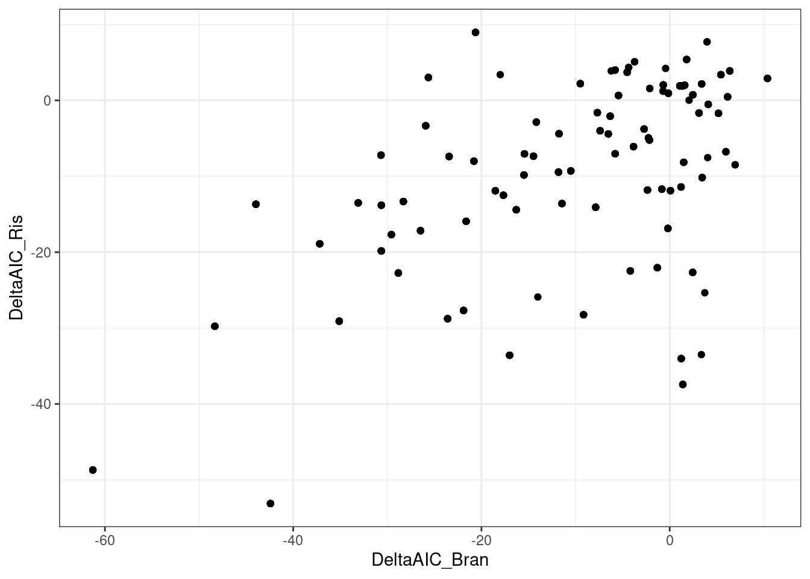
dat.to.plot %>%
pivot_wider(names_from=c("Treatment"), values_from=c("estimate", "std.error", "Pval", "DeltaAIC"), id_cols=c("gene", "term")) %>%
drop_na() %>%
ggplot(aes(x=-log10(Pval_Bran), -log10(Pval_Ris))) +
geom_point() +
theme_bw()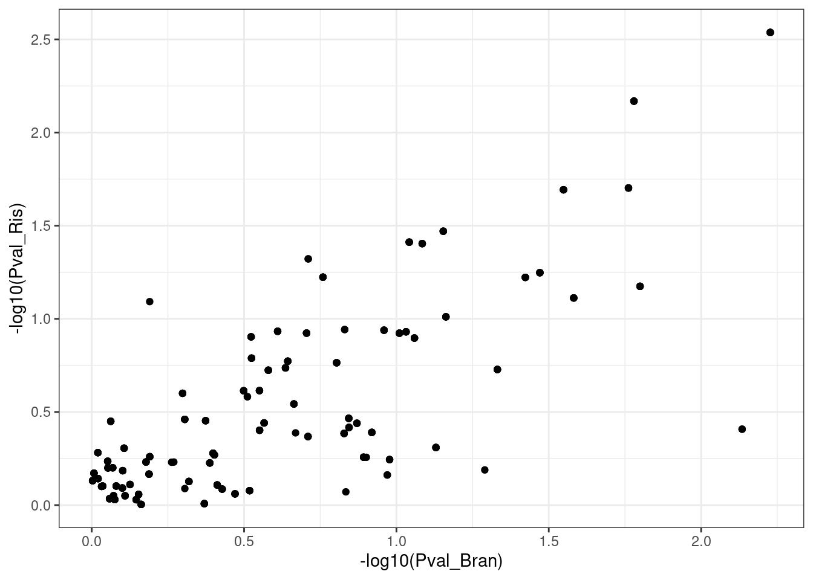
dat.to.plot %>%
pivot_wider(names_from=c("Treatment"), values_from=c("estimate", "std.error", "Pval", "DeltaAIC"), id_cols=c("gene", "term")) %>%
drop_na() %>%
ggplot(aes(x=-log10(Pval_Bran), y=DeltaAIC_Bran)) +
geom_point() +
theme_bw()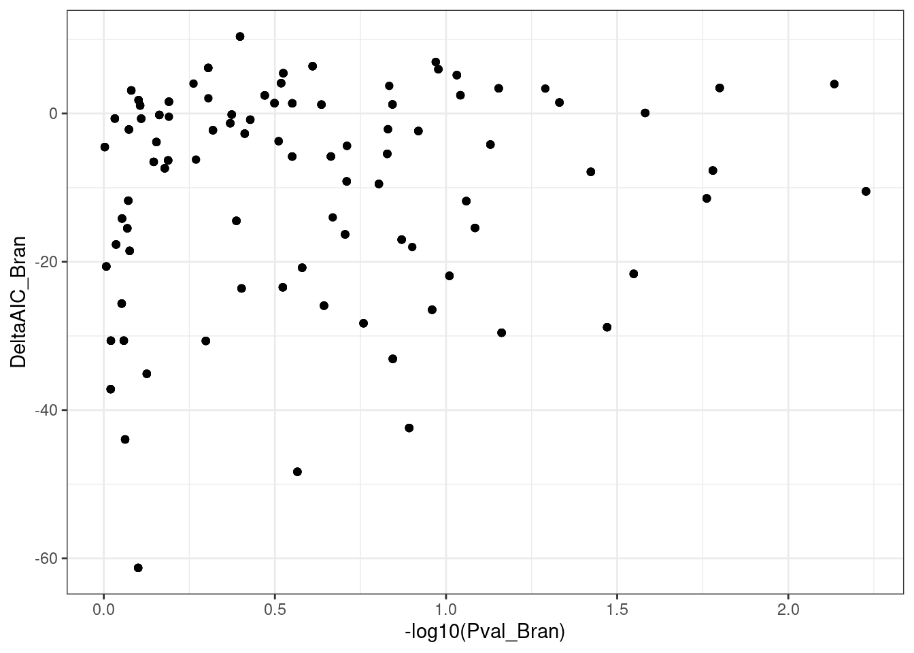
dat.to.plot %>%
pivot_wider(names_from=c("Treatment"), values_from=c("estimate", "std.error", "Pval", "DeltaAIC"), id_cols=c("gene", "term")) %>%
drop_na() %>%
rowwise() %>%
mutate(meanDeltaAIC = mean(DeltaAIC_Ris, DeltaAIC_Bran)) %>%
ungroup() %>%
ggplot(aes(x=estimate_Bran, y=estimate_Ris, color=meanDeltaAIC)) +
geom_abline() +
geom_errorbar(aes(xmin = estimate_Bran-std.error_Bran, xmax=estimate_Bran+std.error_Bran)) +
geom_errorbar(aes(ymin = estimate_Ris-std.error_Ris, ymax=estimate_Ris+std.error_Ris)) +
geom_point() +
scale_x_continuous(trans="log10") +
scale_y_continuous(trans="log10") +
facet_wrap(~term, scales="free") +
theme_bw()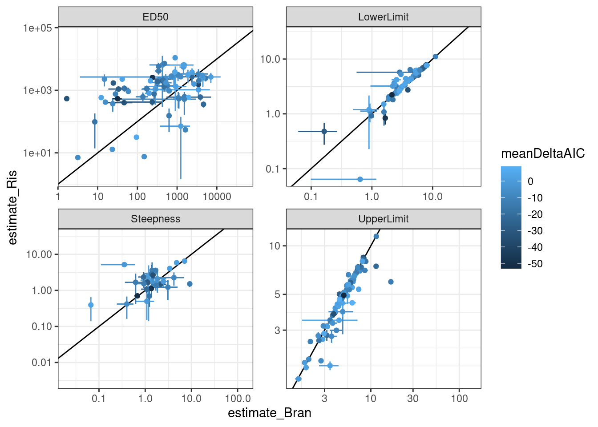
Let’s check out some individual models for individual points on these plots… starting with this red point
PointsOfInterest <- dat.to.plot %>%
filter(term=="ED50" & Treatment == "Bran" & estimate <5) %>%
pull(gene)
dat.to.plot %>%
pivot_wider(names_from=c("Treatment"), values_from=c("estimate", "std.error", "Pval", "DeltaAIC"), id_cols=c("gene", "term")) %>%
drop_na() %>%
rowwise() %>%
mutate(meanDeltaAIC = mean(DeltaAIC_Ris, DeltaAIC_Bran)) %>%
ungroup() %>%
mutate(IsPointOfInterest = gene %in% PointsOfInterest) %>%
ggplot(aes(x=estimate_Bran, y=estimate_Ris, color=IsPointOfInterest)) +
geom_abline() +
geom_errorbar(aes(xmin = estimate_Bran-std.error_Bran, xmax=estimate_Bran+std.error_Bran)) +
geom_errorbar(aes(ymin = estimate_Ris-std.error_Ris, ymax=estimate_Ris+std.error_Ris)) +
geom_point() +
# geom_text(aes(label=gene), size=2) +
scale_x_continuous(trans="log10") +
scale_y_continuous(trans="log10") +
facet_wrap(~term, scales="free") +
theme_bw()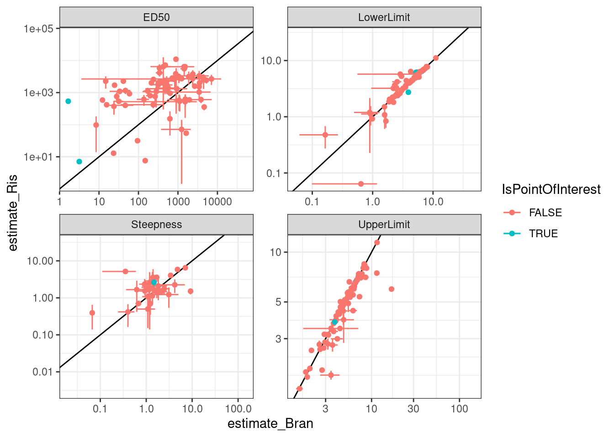
dat.tidy.test <- dat.tidy %>%
filter(gene == "ENSG00000160117.16")
fit <- drm(formula = log2(cpm) ~ dose.nM,
curveid = Treatment,
data = dat.tidy.test,
fct = LL.4(names=c("Steepness", "LowerLimit", "UpperLimit", "ED50")),
pmodels=data.frame(Treatment, Treatment, Treatment, Treatment))
plot(fit)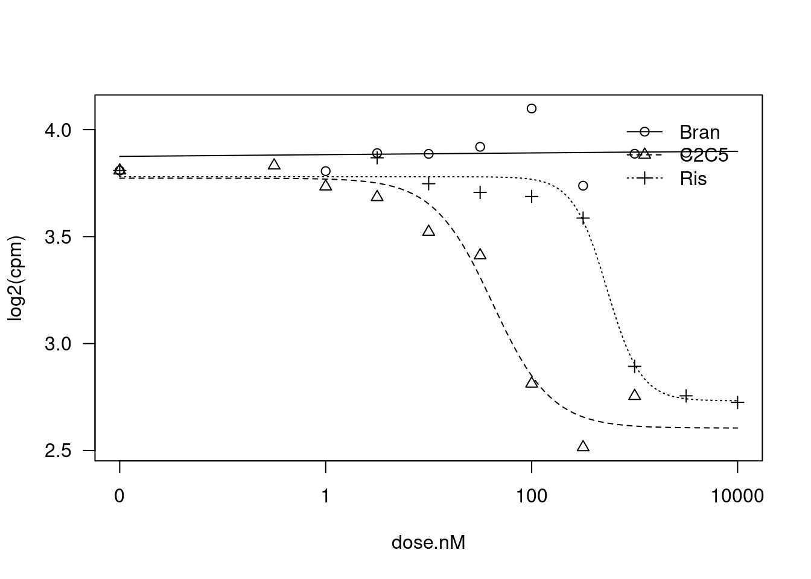
summary(fit)
Model fitted: Log-logistic (ED50 as parameter) (4 parms)
Parameter estimates:
Estimate Std. Error t-value p-value
Steepness:Bran 0.050718 0.471413 0.1076 0.9153451
Steepness:C2C5 1.517828 0.573221 2.6479 0.0150467 *
Steepness:Ris 2.648206 0.948493 2.7920 0.0109234 *
LowerLimit:Bran 3.948101 0.232945 16.9486 9.989e-14 ***
LowerLimit:C2C5 2.605019 0.080378 32.4096 < 2.2e-16 ***
LowerLimit:Ris 2.732253 0.072514 37.6790 < 2.2e-16 ***
UpperLimit:Bran 3.808415 0.055072 69.1534 < 2.2e-16 ***
UpperLimit:C2C5 3.773050 0.045628 82.6912 < 2.2e-16 ***
UpperLimit:Ris 3.779937 0.037193 101.6307 < 2.2e-16 ***
ED50:Bran 0.059997 2.801106 0.0214 0.9831136
ED50:C2C5 41.666034 9.529184 4.3725 0.0002667 ***
ED50:Ris 537.947942 103.762622 5.1844 3.883e-05 ***
---
Signif. codes: 0 '***' 0.001 '**' 0.01 '*' 0.05 '.' 0.1 ' ' 1
Residual standard error:
0.09576291 (21 degrees of freedom)dat.tidy.test <- dat.tidy %>%
filter(gene == "ENSG00000075239.14")
fit <- drm(formula = log2(cpm) ~ dose.nM,
curveid = Treatment,
data = dat.tidy.test,
fct = LL.4(names=c("Steepness", "LowerLimit", "UpperLimit", "ED50")),
pmodels=data.frame(Treatment, Treatment, Treatment, Treatment))
plot(fit)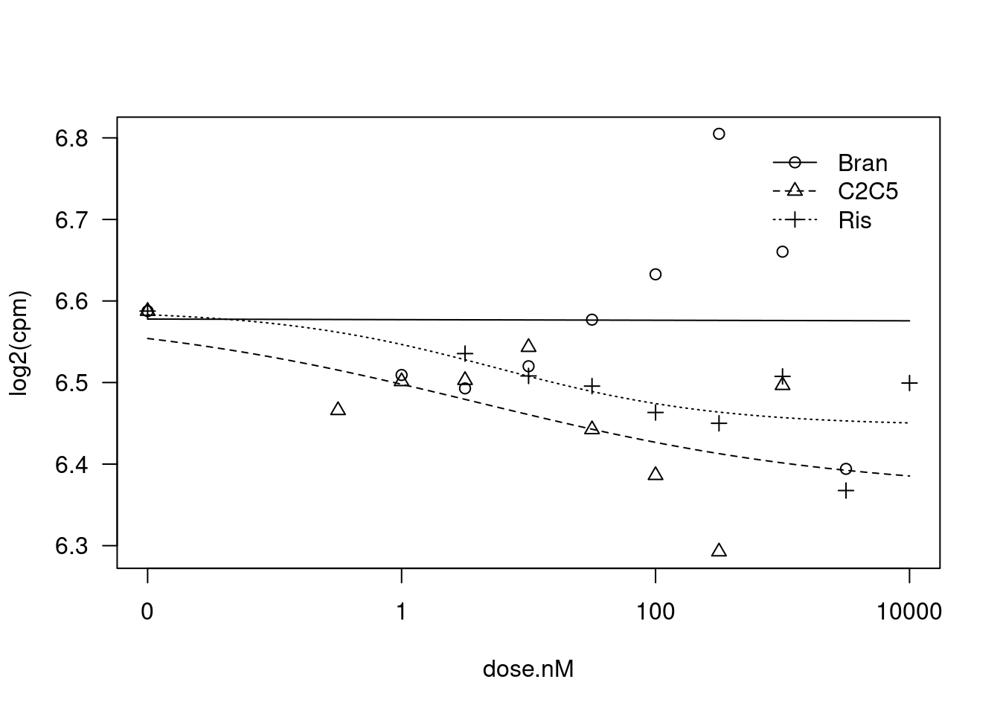
summary(fit)
Model fitted: Log-logistic (ED50 as parameter) (4 parms)
Parameter estimates:
Estimate Std. Error t-value p-value
Steepness:Bran 0.081277 NA NA NA
Steepness:C2C5 0.297441 0.500894 0.5938 0.5590
Steepness:Ris 0.500408 1.221937 0.4095 0.6863
LowerLimit:Bran 6.573052 0.014816 443.6547 <2e-16 ***
LowerLimit:C2C5 6.366048 0.170200 37.4034 <2e-16 ***
LowerLimit:Ris 6.447259 0.074544 86.4891 <2e-16 ***
UpperLimit:Bran 6.580825 0.026813 245.4363 <2e-16 ***
UpperLimit:C2C5 6.585943 0.053893 122.2048 <2e-16 ***
UpperLimit:Ris 6.588939 0.051593 127.7093 <2e-16 ***
ED50:Bran 3.228366 NA NA NA
ED50:C2C5 3.887193 23.120871 0.1681 0.8681
ED50:Ris 5.534319 21.279802 0.2601 0.7973
---
Signif. codes: 0 '***' 0.001 '**' 0.01 '*' 0.05 '.' 0.1 ' ' 1
Residual standard error:
0.09086537 (21 degrees of freedom)dat.tidy.test <- dat.tidy %>%
filter(gene == "ENSG00000136436.14")
fit <- drm(formula = log2(cpm) ~ dose.nM,
curveid = Treatment,
data = dat.tidy.test,
fct = LL.4(names=c("Steepness", "LowerLimit", "UpperLimit", "ED50")),
pmodels=data.frame(Treatment, Treatment, Treatment, Treatment))
plot(fit)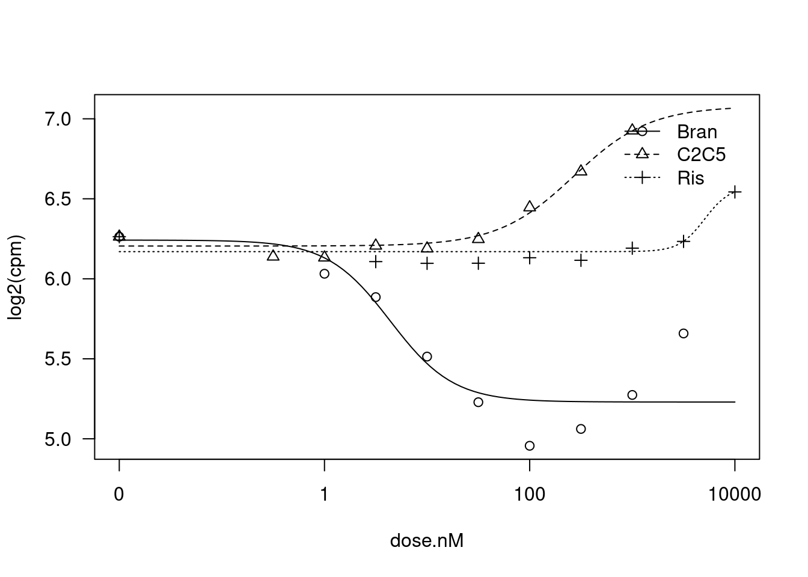
summary(fit)
Model fitted: Log-logistic (ED50 as parameter) (4 parms)
Parameter estimates:
Estimate Std. Error t-value p-value
Steepness:Bran 1.416690 0.542319 2.6123 0.01627 *
Steepness:C2C5 -1.176207 1.031273 -1.1405 0.26690
Steepness:Ris -3.540543 NA NA NA
LowerLimit:Bran 5.230006 0.068466 76.3883 < 2.2e-16 ***
LowerLimit:C2C5 6.204725 0.056185 110.4344 < 2.2e-16 ***
LowerLimit:Ris 6.169790 0.047715 129.3052 < 2.2e-16 ***
UpperLimit:Bran 6.241918 0.083875 74.4191 < 2.2e-16 ***
UpperLimit:C2C5 7.078879 0.568146 12.4596 3.63e-11 ***
UpperLimit:Ris 6.576517 NA NA NA
ED50:Bran 4.379765 1.789508 2.4475 0.02327 *
ED50:C2C5 269.370620 408.653096 0.6592 0.51695
ED50:Ris 5068.662728 NA NA NA
---
Signif. codes: 0 '***' 0.001 '**' 0.01 '*' 0.05 '.' 0.1 ' ' 1
Residual standard error:
0.1437782 (21 degrees of freedom)Ok, lot’s of interseting things going on.
sessionInfo()R version 3.6.1 (2019-07-05)
Platform: x86_64-pc-linux-gnu (64-bit)
Running under: Scientific Linux 7.4 (Nitrogen)
Matrix products: default
BLAS/LAPACK: /software/openblas-0.2.19-el7-x86_64/lib/libopenblas_haswellp-r0.2.19.so
locale:
[1] LC_CTYPE=en_US.UTF-8 LC_NUMERIC=C
[3] LC_TIME=en_US.UTF-8 LC_COLLATE=en_US.UTF-8
[5] LC_MONETARY=en_US.UTF-8 LC_MESSAGES=en_US.UTF-8
[7] LC_PAPER=en_US.UTF-8 LC_NAME=C
[9] LC_ADDRESS=C LC_TELEPHONE=C
[11] LC_MEASUREMENT=en_US.UTF-8 LC_IDENTIFICATION=C
attached base packages:
[1] stats graphics grDevices utils datasets methods base
other attached packages:
[1] lmtest_0.9-37 zoo_1.8-10 sandwich_3.0-2 drc_3.0-1
[5] MASS_7.3-51.4 qvalue_2.16.0 broom_1.0.0 viridis_0.5.1
[9] viridisLite_0.3.0 gplots_3.0.1.1 RColorBrewer_1.1-2 edgeR_3.26.5
[13] limma_3.40.6 forcats_0.4.0 stringr_1.4.0 dplyr_1.0.9
[17] purrr_0.3.4 readr_1.3.1 tidyr_1.2.0 tibble_3.1.7
[21] ggplot2_3.3.6 tidyverse_1.3.0
loaded via a namespace (and not attached):
[1] nlme_3.1-140 bitops_1.0-6 fs_1.3.1 lubridate_1.7.4
[5] httr_1.4.1 rprojroot_2.0.2 tools_3.6.1 backports_1.4.1
[9] utf8_1.1.4 R6_2.4.0 KernSmooth_2.23-15 mgcv_1.8-40
[13] DBI_1.1.0 colorspace_1.4-1 withr_2.4.1 tidyselect_1.1.2
[17] gridExtra_2.3 curl_3.3 compiler_3.6.1 git2r_0.26.1
[21] cli_3.3.0 rvest_0.3.5 xml2_1.3.2 labeling_0.3
[25] caTools_1.17.1.2 scales_1.1.0 mvtnorm_1.1-3 digest_0.6.20
[29] foreign_0.8-71 rmarkdown_1.13 rio_0.5.16 pkgconfig_2.0.2
[33] htmltools_0.3.6 plotrix_3.8-2 highr_0.9 dbplyr_1.4.2
[37] rlang_1.0.3 readxl_1.3.1 rstudioapi_0.10 farver_2.1.0
[41] generics_0.1.3 jsonlite_1.6 gtools_3.9.2.2 zip_2.0.3
[45] car_3.0-5 magrittr_1.5 Matrix_1.2-18 Rcpp_1.0.5
[49] munsell_0.5.0 fansi_0.4.0 abind_1.4-5 lifecycle_1.0.1
[53] multcomp_1.4-19 stringi_1.4.3 yaml_2.2.0 carData_3.0-5
[57] plyr_1.8.4 grid_3.6.1 gdata_2.18.0 promises_1.0.1
[61] crayon_1.3.4 lattice_0.20-38 haven_2.3.1 splines_3.6.1
[65] hms_0.5.3 locfit_1.5-9.1 knitr_1.39 pillar_1.7.0
[69] codetools_0.2-18 reshape2_1.4.3 reprex_0.3.0 glue_1.6.2
[73] evaluate_0.15 data.table_1.14.2 modelr_0.1.8 vctrs_0.4.1
[77] httpuv_1.5.1 cellranger_1.1.0 gtable_0.3.0 assertthat_0.2.1
[81] xfun_0.31 openxlsx_4.1.0.1 later_0.8.0 survival_2.44-1.1
[85] workflowr_1.6.2 TH.data_1.1-1 ellipsis_0.3.2